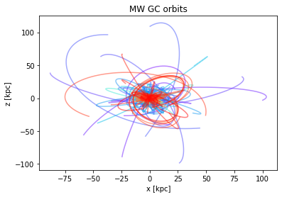
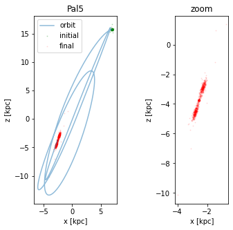
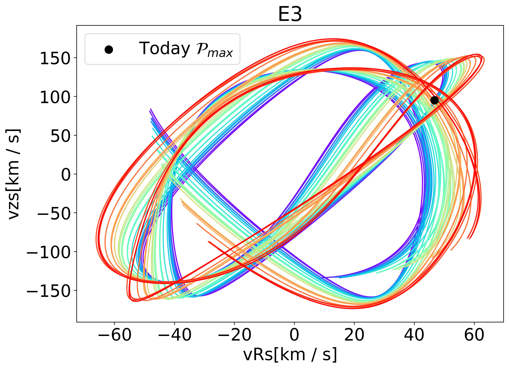
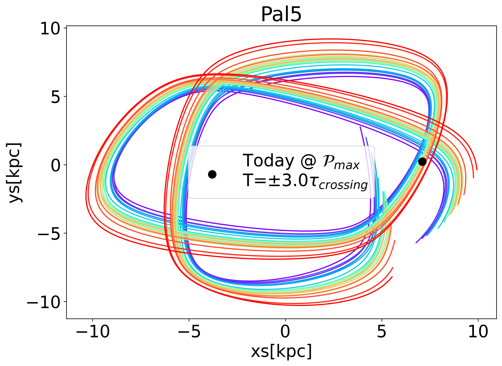
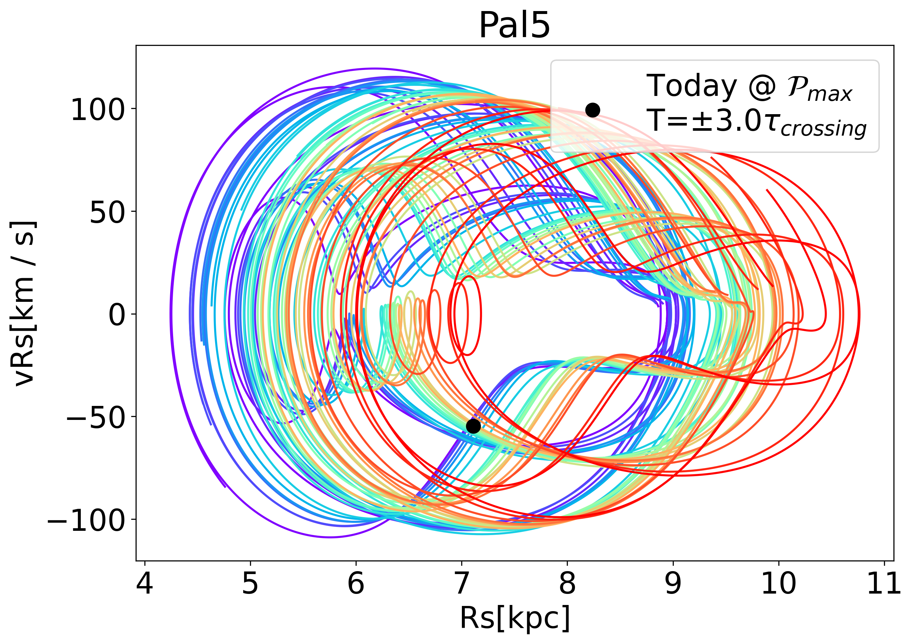
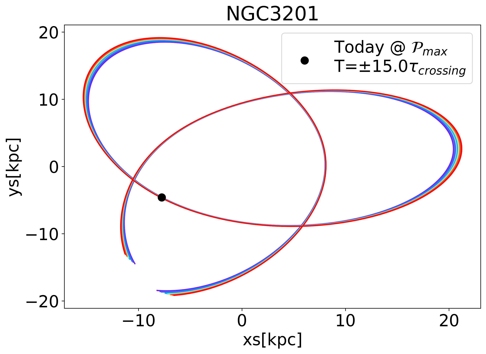

Not too long ago, I took a course where one of the professors made a rather blunt observation: “You’re bad at math, really bad at math." Surprisingly, this comment was not meant to be a targeted insult to our self-esteem, as he included himself in this comment, but rather a generational observation. He was comparing physicists born before and after approximately 1980, drawing a distinction between those who grew up with computers and those who did not. He went on to say, “There’s just something different about those who couldn’t look solutions up online and had no access to Wolfram Alpha; you can see it in the way they carry themselves."
I’ve spent a lot of time reflecting on his words, and I’ve come to see the truth in them. While I may sometimes romanticize the idea of being so sharp that I could effortlessly use Bessel functions of the first kind to solve partial differential equations right after breakfast, I also appreciate the skill set we’ve gained in exchange: programming. The computer has proven to be a remarkably powerful tool, and it has fundamentally changed the way we approach problem-solving.
When I embarked on this thesis, my primary tools were Python, utilizing libraries like Numpy for data manipulation and Matplotlib for plotting. However, as the scope of my work expanded to writing code for numerical simulations, I found myself diving headfirst into the world of Fortran. At the same time, this transition also involved mastering SSH connections to remote machines, writing code with task parallelization, submitting jobs to supercomputers, and efficiently managing a complex code project using Git. Additionally, I had to navigate the challenges of handling and processing hundreds of gigabytes of data.
At the outset of my thesis, a crucial question I pondered was
how to perform the orbital computations necessary for my
research. Initially, our published work in Ferrone et al. (2023) relied
on a custom Fortran script that we had developed. However, as our
project evolved and our ambitions grew to include more complex physics,
we recognized the need for a substantial overhaul of the code. I was
well aware of the common programming pitfall of reinventing the wheel
when existing solutions are available. To explore alternative options, I
delved into the Python package known as Galpy (Bovy 2015),
which offers a range of useful functions for computing orbits within a
Galactic context.
While Galpy had its merits, it lacked the flexibility
required for accommodating the time-varying potentials we needed in our
simulations. As a result, I embarked on a journey to develop my own
extensive code, tailored to the specific demands of my research.
While this code is not yet fully prepared for public release, it can be accessed at https://gitlab.obspm.fr/sferrone/gc-tidal-loss. The code is a hybrid of Python and Fortran. Fortran is utilized for orbital computations, whereas Python is employed for data management and analysis. The subsequent three sections provide detailed insights into the code: integration units are explained in Section 1.1, a concise code walk-through is presented in Section 1.2, and the handling of uncertainties is discussed in Section 1.3.
In astronomy, we employ a distinct set of units that defies the conventions of the International System of Units (SI). This deviation is warranted due to the vast cosmic distances, time scales spanning the age of the universe, and the immense masses of celestial objects, rendering the use of meters, seconds, and kilograms impractical and unintuitive. Furthermore, from a computational perspective, it is advantageous to work with unit values that are close to unity rather than dealing with quantities that span several orders of magnitude, as this can help reduce round-off errors.
In our astronomical system of units, we rely on three fundamental dimensions: mass, time, and length. But in fact we will choose length, velocity, and mass to be the fundamental units and let the time, acceleration, and gravitational constant be derived: \[\begin{aligned} L &= 1 \mathrm{kpc},& V&=1\mathrm{km/s},&M=1\mathrm{M}_{\odot}. \end{aligned}\] These choices offer several advantages. First, the distance from the sun to the center of the galaxy is approximately 8 kiloparsecs (kpc), making the kiloparsec a natural unit for astronomical distances. Line-of-sight velocities are typically measured in kilometers per second (km/s), and the typical speed of stars in the galaxy is on the order of 200 km/s. Using a solar mass as the unit for mass allows for a quick estimate of the number of stars in a system. For instance, galaxies have masses between \(10^{10}\) and \(10^{12}\) \(\mathrm{M}{\odot}\), while globular clusters have masses between \(10^{4}\) and \(10^{6}\) \(\mathrm{M}{\odot}\).
Furthermore, this choice of units will naturally constrain the other units in our system. When converting from SI units, the gravitational constant becomes: \[G = 4.3009 \times 10^{-6} \left(\frac{\mathrm{km}}{\mathrm{s}}\right)^2 \mathrm{M}_{\odot}^{-1} \mathrm{kpc}.\] A great way to remember the new units of the gravitational constant is to first recognize that gravitational potential has units of velocity squared, and subsequently imagine the the Keplerian potential: \(\Phi = G\frac{M}{r}\). Thus, the gravitational constants requires inverse mass and distance to result in velocity squared. Next, the unit of time of time in our system becomes: \[t = \frac{l}{v} = 1 \frac{\mathrm{kpc}}{\mathrm{km}}\mathrm{s}.\] This unit may seem unconventional, but it has a numerical value of approximately 0.98 billion years (Gyr), making the integration units slightly smaller than a billion years. A useful mnemonic to remember this unit derivation is that 1 kilometer per second (km/s) is roughly equivalent to 1 kiloparsec per gigayear (kpc/Gyr). With this understanding, we can quickly estimate the duration of a "galactic year." Given that the Sun has a circular velocity of about 220 km/s at a radial distance of approximately 8 kpc from the Galactic center, it takes approximately 0.22 Gyr or 220 million years to complete one orbit.
Regarding the unit of acceleration, we can derive it from the relation \(g = -\nabla \Phi\), which represents a change in velocity squared per unit length: \(\left(\frac{\mathrm{km}}{\mathrm{s}}\right)^2 \mathrm{kpc}^{-1}\). When multiplied by a unit of time, we once again obtain a unit of velocity. This definition aligns with the concept of acceleration as the time derivative of velocity, where dividing the unit of velocity by the unit of time yields units consistent with the gradient of the potential.
Here, in order to explain the mechanics of the code I wrote for my thesis, I provide a minimum example. Originally, I began writing a minimum working example, however, it became to cluttered for a small first year report. A minimum working example already exists can be provided upon request.
Assuming that you are working in a Jupyter notebook and have already imported the necessary modules and loaded the required data, the initial step for using this numerical integrator is to provide the parameters for the Galaxy:
integrator.setstaticgalaxy(MWgravfield[0],MWgravfield[1])The first argument, MWgravfield[0], specifies the name
of the potential, which tells the code which subroutine to use.
Typically, “pouliasis2017pii" is used. The next argument,
MWgravfield[1], is a Python list of floating-point numbers
representing the parameters of the various components of the potential.
These parameters include the masses and scale lengths. The order and
number of parameters must match the potential you’re using. For example,
“pouliasis2017pii" expects 11 parameters, including the gravitational
constant, four halo parameters, and three disc parameters for thin and
thick discs.
After specifying the potential, you need to provide the initial
positions and velocities of the particles you want to integrate. Each of
the arrays passed should have a length of N, where
N is the number of particles you intend to integrate:
integrator.setinitialkinematics(
GCcoord.x.value,GCcoord.y.value,GCcoord.z.value,
GCcoord.v_x.value,GCcoord.v_y.value,GCcoord.v_z.value)This code snippet provides the positions and kinematics of all
globular cluster coordinates. The .value is included at the
end of each variable because they are Astropy Quantities that include
both numbers and units. Using .value returns the
floating-point number without the unit. Passing an
Astropy.Quantity instance to the Fortran module would
result in an error. Finally, you can set the integration parameters of
the system:
integrator.setintegrationparameters(T.value,dt.value,NSTEP) The previous steps can be understood as initialization. With all the information in place, now the positions and the velocities can be integrated:
xt,yt,zt,vxt,vyt,vzt=integrator.leapfrogintime(
integrator.ntimesteps,
integrator.nparticles)Notice that the number of time steps and particles must be passed as
arguments to this subroutine. This may seem redundant since the number
of particles, \(N\), is known from the
setinitialkinematics, and the number of time steps was
established in the previous step. However, since the values are not
known at compilation time for the subroutine, they need to be passed at
runtime. The orbits of each globular cluster over the course of 1
billion years are shown in Fig. [fig:all-orbits].
 
After the orbit of the host is obtained, a very similar procedure is followed to create the streams. I.e. first the system must be initialized and then the integration call is made. There are two main differences. The first is that we must now generate the initial positions of the star-particles within a globular cluster. I wrote a code to create the initial conditions as discussed in section [sec:DistributionFunctionSampling].
xp,yp,zp,vxp,vyp,vzp=particleDistributions.isotropicplummer(
G.value,mass.value,halfmassradius.value,NP) Now we shift these positions and velocities to about the globular
cluster of interest, which is identified with a
GCindex.
xi=xp+GCcoord.x.value[GCindex]
yi=yp+GCcoord.y.value[GCindex]
zi=zp+GCcoord.z.value[GCindex]
vxi=vxp+GCcoord.v_x.value[GCindex]
vyi=vyp+GCcoord.v_y.value[GCindex]
vzi=vzp+GCcoord.v_z.value[GCindex]Now the initial positions and integration parameters are established, just as before:
integrator.setstaticgalaxy(MWgravfield[0],MWgravfield[1])
integrator.setintegrationparameters(T.value,dt.value,NSTEP)
integrator.setinitialkinematics(xi,yi,zi,vxi,vyi,vzi)Here is the second main difference, which is that the positions and velocities of the host must also be passed:
thost=np.linspace(0,T.value,NSTEP+1)
integrator.inithostperturber(
thost,
xt[GCindex,0:NSTEP+1],
yt[GCindex,0:NSTEP+1],
zt[GCindex,0:NSTEP+1],
vxt[GCindex,0:NSTEP+1],
vyt[GCindex,0:NSTEP+1],
vzt[GCindex,0:NSTEP+1],
mass.value,
characteristicradius.value) During the computation, the Fortran module will evaluate the current time of the system, determine the position of the host, and compute its force on all of the particles specified in the initial conditions. You might wonder why velocities are passed, given that the gravitational force only requires the position. The reason is that during the integration, we evaluate the energy of each particle relative to the center of mass to determine whether the particle is bound or unbound. Therefore, we must know the host’s velocity to calculate the kinetic energy of each star particle. Finally, the integration of the particles is executed using the following command:
integrator.leapfrogtofinalpositions()This subroutine integrates the positions of the particles to the end.
In this subroutine, we do not need to pass the number of steps nor the
number of particles since we are not saving the intermediate positions.
Therefore, we do not need to allocate arrays at run-time, unlike the
previous leapfrogintime subroutine. The output of this
example is shown in the right panels of Fig. [fig:all-orbits], where the orbit of
the globular cluster of interest, Palomar 5, is shown in blue. The
initial configuration of the Plummer system is depicted with the green
dots. Each particle is integrated for 1 Gyr, all the while experiencing
the gravitational forces from both the galaxy and the Plummer sphere
representing the host. This provides the output shown with the red
dots
There are different types of uncertainty affecting this project: (1) observational uncertainties, (2) modelling uncertainty, and (3) numerical uncertainty. I will briefly discuss each one here, although the final draft of the thesis will include a much more rich discussion.
Regarding the observational uncertainty, most of the quantities reported in Baumgardt and Hilker (2021) are accompanied with errors. We approximate the uncertainties as \(1\sigma\) Gaussian errors. The kinematic properties of the clusters are reported in right ascension (RA), declination (DEC), solar distance \(R_{\mathrm{sun}}\), proper motions in RA & DEC, as well as line-of-sight velocities. Uncertainties are included on all of the above save for RA and DEC, since their uncertainties are negligible compared to the others. Additionally, the uncertainties in the proper motions are correlated, which consider. Regarding the internal dynamics, the dataset includes a rich set of parameters such as velocity anisotropy, and core-density concentration. We do not consider these values since we are using a simplified Plummer sphere. The limitations due to these simplifications are discussed next. From the database, we extract the half-mass radii of the clusters as well as the mass–which contain uncertainties that we consider. In all, for each globular cluster, we create 50 sets of initial conditions. One set of initial conditions contains a realization of the kinematic parameters and a distribution of 100,000 particles. Thus, the possible the uncertainties in the position and kinematics drive the orbital uncertainty while the mass of the cluster drives the uncertainty in the internal dynamics. Examples of different orbits based on the sampling of the initial conditions for pairs of phase space coordinates for three globular clusters is presented in Fig. [fig:orbit-uncertainties].
 
 
All models are wrong. Therefore, as a numerical modeler, it’s critical to ask questions such as, ‘How accurate is my model? What specific inquiries can my model address? And conversely, what questions is it incapable of answering?’ It’s imperative to recognize and acknowledge the limitations of your model.
In this experiment, there are primarily two significant sources of modeling uncertainties. The first pertains to how we represent the gravitational field of the Milky Way, while the second concerns the internal dynamics of the globular clusters.
Numerous gravitational models for the Milky Way exist. In our study, we focused on three specific models. The first two models, as documented in (Pouliasis, Di Matteo, and Haywood 2017), were considered, and we also explored a modified version of a model therein, which incorporates a rotating stellar bar. It’s worth noting that our research aims to explore additional models to determine which ones yield stellar streams that best replicate observations.
Another modeling decision we made concerns the duration for which we integrated the orbits of the globular clusters, which we set at 5 Gyr. This timespan is sufficiently long to induce a notable amount of tidal loss from the globular clusters. Equally important, this period is a safe choice, considering that the Milky Way can be assumed to be in relatively stable equilibrium. To illustrate, the last significant merger event that had a substantial impact on the Milky Way’s mass and equilibrium, involving the disintegration of a satellite—likely Sagittarius—occurred over 5 Gyr ago (Kruijssen et al. 2020).
Furthermore, the internal dynamics of the globular clusters play a crucial role in determining both the rate and the specific stars that are ejected over time. Globular clusters present a unique challenge due to their two-body relaxation time comparable to the typical age of globular clusters, approximately 10 Gyr. An intriguing phenomenon resulting from the collisions between stars within globular clusters is known as "mass segregation." This phenomenon leads to more massive stars tending to migrate toward the cluster’s center, while less massive stars are pushed toward the outskirts.
The study conducted by Balbinot and Gieles (2018) underscored the importance of mass segregation in understanding stellar streams and revealed some seemingly counterintuitive outcomes. For instance, if the mass of a globular cluster increases, one might expect its tidal tails to be brighter due to a higher number of potentially escaped stars. However, mass segregation causes more low-mass stars to escape, which are dimmer, resulting in difficult-to-observe tails.
Properly addressing the internal dynamics of globular clusters is indeed a computationally expensive task. In our current treatment, we adopt an \(\mathcal{O}(n)\) computation time, focusing on integrating particles influenced by a gravitational field only. A higher-order approach would involve considering N-body interactions, which would have a computational complexity of \(\mathcal{O}(n^2)\). However, even this doesn’t constitute the most accurate description of the dynamics. To achieve a more precise representation, one would need to account for the mass distribution of stars within the cluster and establish an initial configuration, potentially following a distribution like the Kroupa mass function (Kroupa 2001).
Furthermore, the presence of binary star systems poses a challenge. Accounting for binary stars would significantly reduce the code’s computational speed because the dynamical timescale for binary star systems is on the order of a few years. This reduction in integration time-step could exceed four orders of magnitude.
Additionally, the issue of stellar remnants and black holes within the centers of globular clusters is worth considering. We’re not suggesting that Newtonian mechanics must be abandoned in favor of general relativity due to black holes in the cluster. However, it’s important to acknowledge that the presence of a very massive object at the system’s center can significantly impact the dynamics, as has been observed (Vitral et al. 2023).
The primary objective of this thesis is to gain insights into the distribution of tidal debris emanating from the entire globular cluster system. As a result, we must make certain simplifications that enable us to make predictions for all approximately 150 globular clusters. This involves Monte Carlo sampling of orbital uncertainties and exploring various galactic potential models. Given the scope of our work, a comprehensive exploration of the internal dynamics to a high degree of precision is currently unfeasible for the entire system. Nevertheless, we may delve into this aspect on a per-cluster basis in the future if higher resolution is deemed necessary.
We find our approach acceptable for several reasons. First, once particles escape from the globular cluster, their motion is largely governed by the Milky Way’s gravitational field. Our primary concern is ensuring the rate at which particles escape from the clusters in our models aligns with reality. Since the primary drivers of mass loss are tidal forces and the three-body problem, we are confident in the results our models yield. Furthermore, Mastrobuono-Battisti et al. (2012) has demonstrated that there is hardly a difference in the morphology of tidal tails when comparing N-body simulations to test-particle simulations.
The numerical accuracy of the orbital solutions is a crucial consideration, as numerical errors can introduce artificial acceleration to particles, potentially leading to an inflated mass loss rate. Numerical uncertainties are primarily influenced by the size of the integration time-step and the chosen numerical method. In our approach, we utilize a leap-frog integration scheme.
To determine an appropriate time-step for each system, we first integrated the star-particles within each globular clusters in isolation for 1 Gyr, employing an initial time-step of \(\Delta t = 10^5~\mathrm{yr}\). During this integration, we calculated the mean energy conservation relative to the initial energy of the system, denoted as \(\langle\delta E\rangle/E_0\). For approximately two-thirds of the clusters, a typical energy drift smaller than \(10^{-10}\) was observed. However, the remaining clusters required higher resolution. Consequently, we reduced the time-step to \(10^4~\mathrm{yr},\) ensuring that the energy drift rate remained below \(10^{-10}\) for all clusters.
In the current version of the code, we have refined the method for evaluating numerical uncertainties. A detailed analysis of this process will be presented in the accompanying published article on our methods. In summary, we expanded our investigation to assess the effects of temporal resolution on the orbits of globular clusters. Given that the dynamical time of a globular cluster within the Galaxy is significantly shorter than the dynamical time of a particle within the cluster, there’s no need for an ultra-short time-step to ensure energy conservation. However, we adjusted the time-step to guarantee that the drift in the final positions of the globular clusters after 5 Gyr is significantly smaller than their characteristic sizes.
\[\tau = \sqrt{\frac{3\pi}{G\rho_c}} \left(1+\left(\frac{r}{b}\right)\right)^{3/4},\]
where \(\rho_c\) is the plummer’s characteristic density: \(\rho_c = \frac{3M}{4\pi b^3}\).